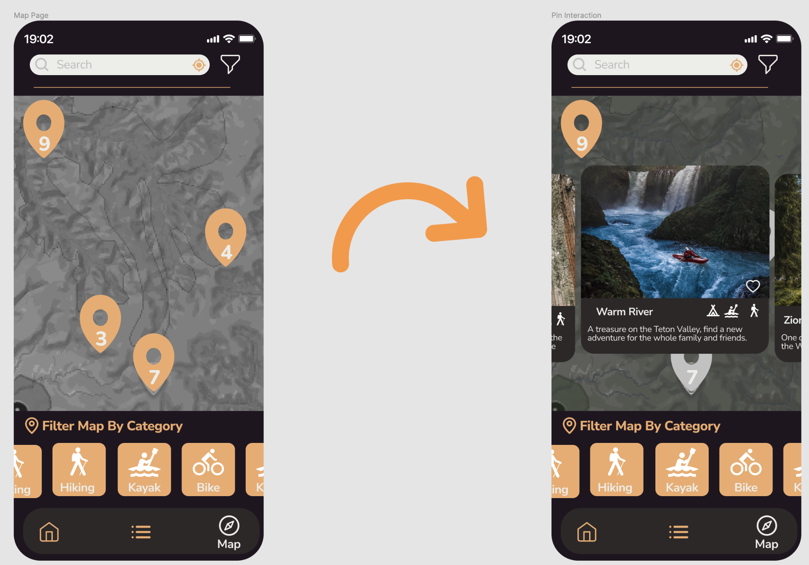

abcdefghijklmnopqrstuvwxyz
1234567890
Click Here to download this font from Google Fonts.

When a location pin is tapped, the screen will display a card scroller menu with options inside that Pin screen. Overlaying all the other pins while the screen got a gray color background behind the cards. This would help the user to clearly see a prompt feedback about the interaction made and amplify the range of options and next steps the user could take from that point. Expanding the amount of information available for the user within few steps of interaction.
